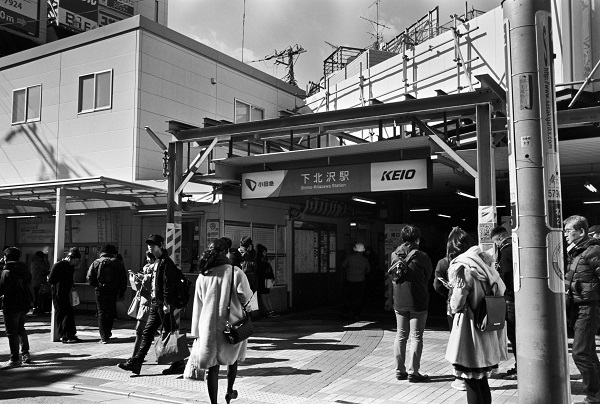

IN05京王井の頭線 OH07小田急小田原線
下北沢駅 Shimokitazawa
池ノ上駅
←← 京王井の之頭線 →→
新代田駅
東北沢駅
←← 小田急小田原線線 →→
世田谷台田駅
2019/2/14 ﾐﾉﾙﾀCLE 35mm Acros
2019/2/14 ﾐﾉﾙﾀCLE 35mm Acros
2019/2/14 ﾐﾉﾙﾀCLE 35mm Acros

2018/2 ﾐﾉﾙﾀCLE 35mm Acros
2018/2 ﾐﾉﾙﾀCLE 35mm Acros
戻る
ﾎｰﾑ